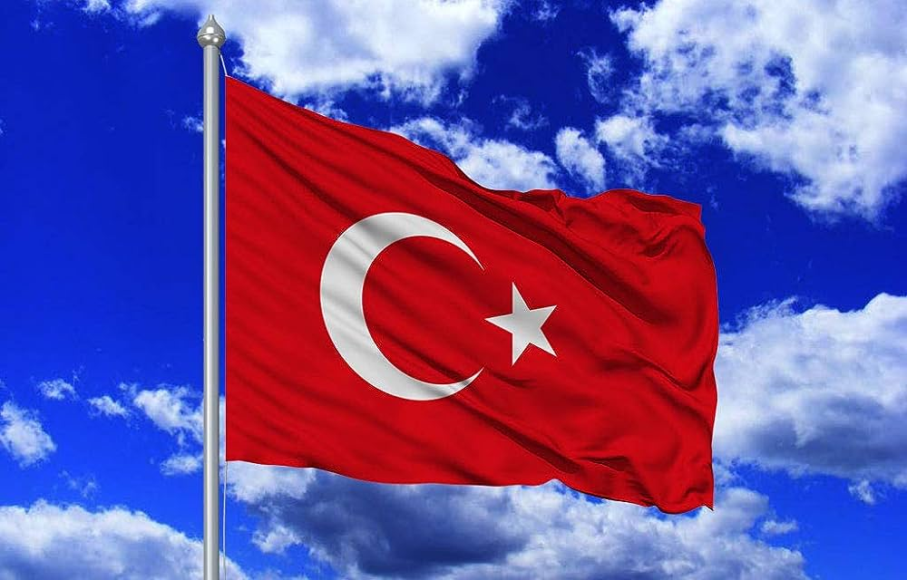

HİLAL AYVAT
ANASAYFA|
ÖZGEÇMİŞ|
İLETİŞİM|
KİTAPLARIM

Türkiye; Anadolu Yakası, Güneydoğu Avrupa ve Asya'yı birbirine bağlayan büyük, kabaca dikdörtgen bir yarımadadır.
Toprakları 36–42° Kuzey enlemleri ve 26–45° Doğu boylamları arasında yer alır.
Ülkenin doğusu ile batısı arasında 76 dakikalık bir zaman farkı vardır. Genişliği 1.660 kilometredir.